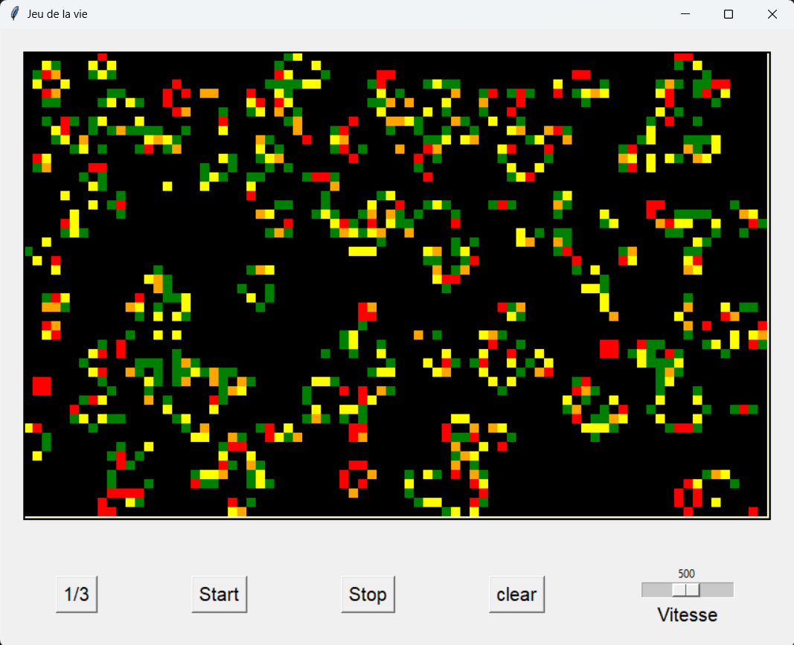
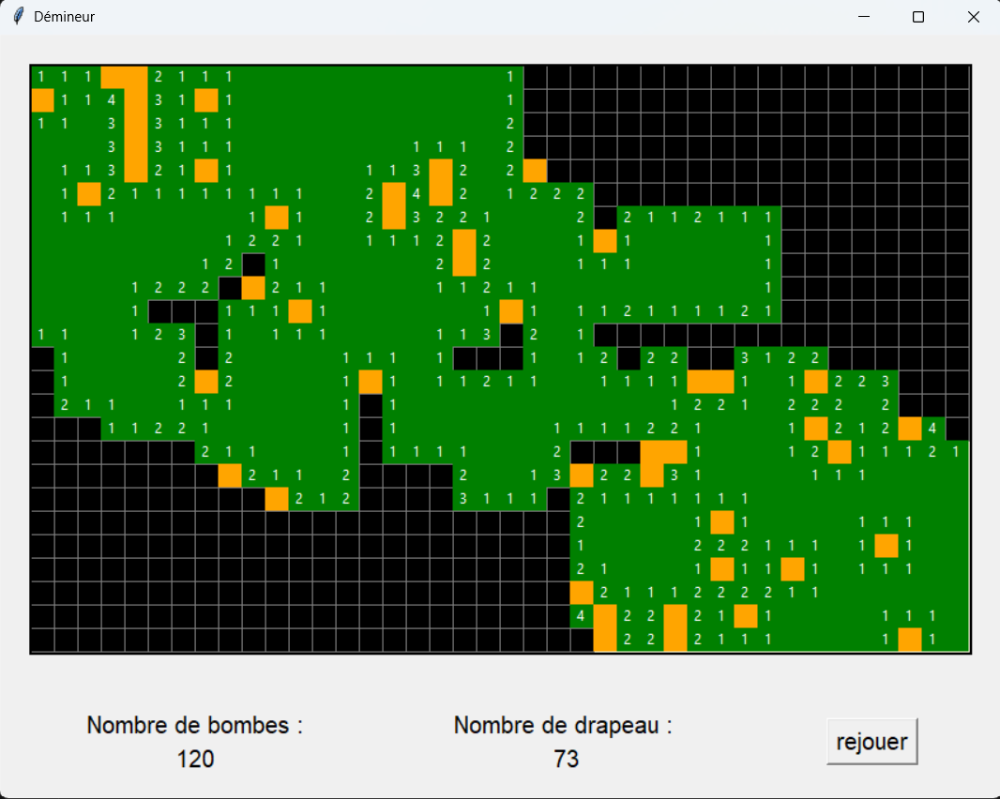
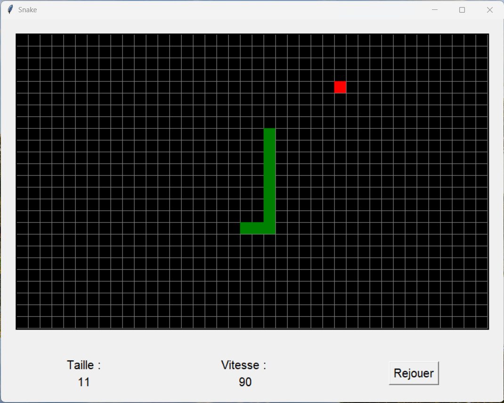

Pixel Game#
Vous trouverz dans cet article l’évolution et la mise en oeuvre de petits projets python avec la bibliothèque Tkinter. Mon but dans ce projet et de me chalenger avec la création de plusieurs petits jeux puis dans la création d’un application unique les réunissants.
Jeux de la vie#
Introduction#
Le jeu de la vie à été créé par le mathematicien John Horton Conway en 1970. Il s’agit d’une simulation la plus simple possible de cellules mortes ou vivante.
Sur un plan en 2 dimensions theoriquement infini, nous avons deux règles simpes :
- une cellule morte devient vivante si elle possède 3 voisines vivantes
- une cellule vivante reste vivante si elle possède 2 ou 3 voisine vivante, sinon elle meure
réalisation#
Classe Cellule

source : personnelleDémineur#
Voir le code sur GitHubJ’ai décider de séquancer ce projet en trois parties :
- init
- Cellule
- main

source : personnelleSnake#
Voir le code sur GitHub
source : personnelle Voir le code sur GitHubBac à sable#
Le but du bac à sable n’est pas de créer un jeu comme pour les programmes passé, mais de créer un cadre de travail pour ajouter des jeux.
Ce programme sert donc à créer une interface avec des bouttons et une matrice de pixel pouvant être plus facilement programmé et ajouter à un seul et unique code.
mdr c’est pas claire du tout